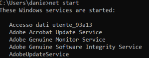
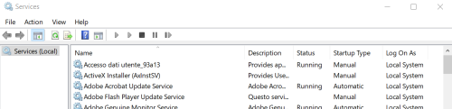
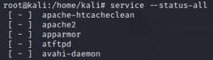

Role of the machine in the network
• workstation
◇ Which department is it from?
▪ R&D?
▪ Marketing?
▪ …
• server
◇ which services are running on it?
◇ what type of server?
▪ A Mail server?
▪ A Web server?
▪ A RADIUS?
▪ …
Running services ← the more important
To know the role of a machine in a network we can check the services running on it to have a more clear idea
• Windows
C:\Users\danie> net start
A machine with a Server role will have for example the following services running: DNS Server, Web Server IIS

• Linux
root@kali:/home/kali# service --status-all
Services(running & stopped)
• Meterpreter
meterpreter > post/windows/gather/enum_services.rb #Windows
• Windows
C:\Users\danie> wmic service get name,pathname,startname,state #list name services on cmd
C:\Users\danie> %windir%\system32\services.msc #start GUI interface
C:\Users\danie> %windir%\system32\services.msc #start GUI interface


• Linux
root@kali:/home/kali# service --status-all

How we can also see from /usr/sbin/service; [+] means that the service is running, [-] means the service is not running
Running processes
• Meterpreter
meterpreter> ps
• Windows
wC:\Users\danie> mic process get ProcessId,Description,ParentProcessId,ReadOperationCount,WriteOperationCount